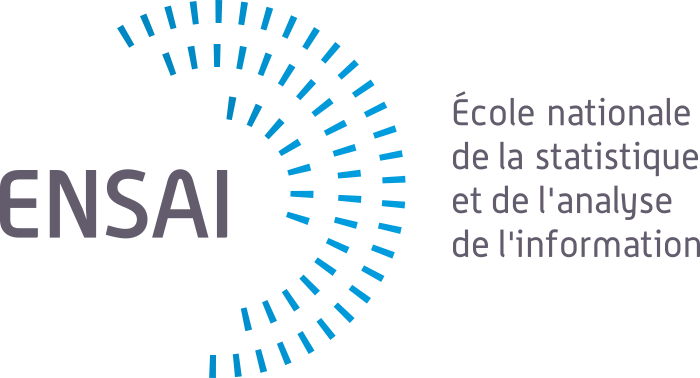
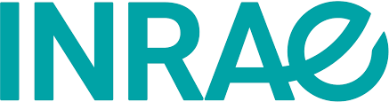
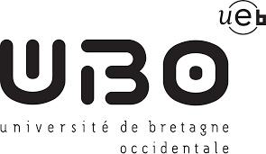
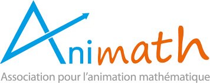
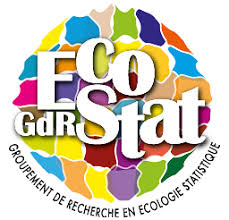
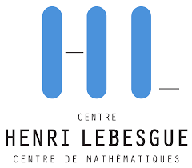
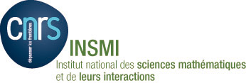
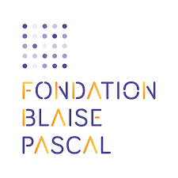
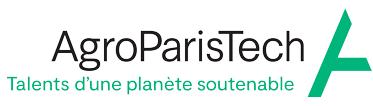

Les employeurs des animatrices scientifiques
Nous serons quatre animatrices scientifiques, nous en sommes aussi les organisatrices. Cette idée de partager notre expérience et de montrer en quoi les mathématiques sont utiles dans les sciences environnementtales nous tient à coeur et nous avons mis de l’énergie dans la mise en place de ce projet. Ceci a été possible grâce aux soutiens des écoles, universités ou organismes de rechecrhe qui nous emploient. Merci donc à l’Institut Agro Rennes-Angers, INRAE, Sorbonne université et l’université de Bretagne occidentale.
|  |  |  |
|---|
Le porteur du séjour
L’Association Animath a pour but de favoriser l’introduction, le fonctionnement, le développement, la mise en réseau, la valorisation et la reconnaissance institutionnelle d’activités mathématiques dans les écoles, collèges, lycées et établissements de niveau universitaire. C’est dans le cadre de ces activités que l’association a accepté de porter le séjour, c’est-à-dire nous aider dans le montage et la gestion financière du projet, mais également sur les aspects réglementaires (notamment en terme d’assurance). C’est grâce à cette association que le projet qui avait germé dans nos têtes a pu voir le jour.
|  |
|---|
Les financeurs du projet
De nombreux acteurs de la recherche et de l’enseignement supérieur ont participer financièrement au projet
Des groupes scientifiques
Au-delà des regroupements locaux au sein des laboratoires, les chercheurs se structurent en réseau autour de leurs thématiques d’intérêts. Il se rencontrent, collaborent, se structurent. C’est notamment le rôle des Groupes de Recherche (GDR). Le GDR Ecologie Statistique existe depuis 10 ans et il structure la communauté des chercheurs de différentes disciplines intéressés par des questions à l’interface entre les statistiques, l’informatique et l’écologie.
Certains laboratoires se regroupent pour demander le statut de LabEx signifiant Laboratoire d’excellence. Ces regroupements sont l’assurance de moyens supplémentaires pour financer la recherche au sein de ces regroupements. Le Centre Henri Lebesgue (CHL) est un LabEx qui regroupe des laboratoires en mathématiques de Brest, Vannes, Rennes, Nantes, Le Mans et Angers.
|  GDR Ecostat |  CHL |
|---|
Des organismes de recherche
La recherche en France est aussi structuré par des organismes de recherche. Parmis ces organismes, Le Centre National de la Recherche Scientifique (CNRS) a une mission définie depuis 1982 par Identifier, effectuer ou faire effectuer toutes les recherches présentant un intérêt pour la science ainsi que pour le progrès technologique, social et culturel du pays.Il est structuré en instituts, c’est l’INSMI (Institut national des sciences mathématiques et de leurs interactions (Insmi) ) qui s’occupe de la recherche en mathématique. INRAE, l’Institut national de recherche pour l’agriculture, l’alimentation et l’environnement est né le 1er janvier 2020. Il est issu de la fusion entre l’Inra, Institut national de la recherche agronomique et Irstea, Institut national de recherche en sciences et technologies pour l’environnement et l’agriculture. Cet organisme structure la recherche autour des questions de sécurité alimentaire, transition des agricultures, préservation des ressources naturelles, restauration de la biodiversité, anticipation et gestion des risques. Quand il s’agit de développemnt de nouvelels méthodes pour comprendre et analyser des données autour de ces sujets, c’est le domaine du département MathNum.
Ces deux organismes sont soucieux du développement et de la formations dans leurs disciplines et sont vigilants sur les questions de parité. C’est notamment à ce titre que ces deux organismes ont participé au financement des Mouettes Savantes.
|  INSMI | MathNum |
|---|
Des programmes de médiation scientifique
Différentes structures, des écoles, des Fondations, des programmes gouvenementaux se préoccupent d’encourager la découverte des mathématiques et de la sensibilisation sur les enjeux de la transition écologiqe. Ces différents structures ont également apporté un soutien important aux Mouettes Savantes.
|  Fondation Blaise Pascal |  Médiation Scientifique à AgroParisTech |
|---|
Des entreprises
En 2025 nos avons eu la joie de recevoir le support spontané de Casio, dans le acdre de son programme Women Do Science.